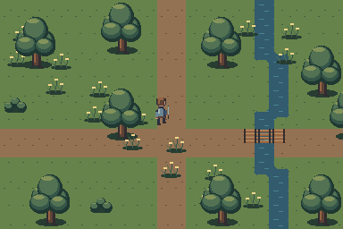

Search the Art Bible
Search works locally, including offline.
Art Bible · Environments
Lighting, weather and seasons
One map under six conditions, with crisp source sprites and bounded runtime atmosphere.
Edition 0.1.0 · Owner review pending for new reference art
On this page
The same scene, changed conditions
The local study keeps map geometry and object positions identical across day, dusk, night, rain, snow and torchlight. Color treatments are illustrative technical demonstrations. They are not Godot runtime captures, approved LUTs or proof of weather integration. Use the comparison control to inspect the same registration.

Day · 0% day comparison
Baked form and runtime light
Bake enough upper-left shading into a sprite to describe its shape under neutral light. Keep environmental illumination separate where possible. A PointLight2D can supply a local lamp pool; DirectionalLight2D can provide broad direction; CanvasItem modulation or a reviewed shader can establish ambient mood. Light textures and LightOccluder2D or TileSet occlusion data need their own integration review.
Do not require normal maps for every small sprite. If a material needs a normal map, treat it as an optional matched export with identical canvas and registration, and test the result against the baked shading. A sprite PNG alone does not create correct occlusion or physically consistent light.
Time of day
| Condition | Art direction | Readability check |
|---|---|---|
| Morning | Slight warmth on lit planes, cool quiet shade | Paths and pale icons remain visible |
| Day | Neutral reference light; source material colors readable | Baseline actor-to-ground contrast |
| Dusk | Lower cool shadows with selective warmth | Do not muddy every cloth/skin distinction |
| Night | Reduced ambient values; local lamps and actor edge separation | Enemy silhouettes and route boundaries still readable |
| Torch / lantern | Small warm pool, restrained flicker, source flame stays crisp | No large blurred glow covering characters |
| Magical light | Limited hue family with explicit focal point | Do not override danger or healing identity |
Weather and seasonal modules
Rain uses sparse short pixel streaks and optional small impact accents, separate from terrain. Snow uses authored ground and roof variants plus restrained flakes; a cool color wash is not a complete winter kit. Fog uses bounded low-frequency layers with reviewed opacity and edge treatment. Wind changes foliage or cloth through small authored poses, not elastic image distortion.
Autumn foliage should preserve value order and trunk relationships while changing leaf ramps. Winter needs bare-tree or snow-loaded variants, clear doors and visible road boundaries. Keep transitions complete: a snow base without snow-to-road, snow-to-water and roof-edge states is incomplete. Match seasonal objects to the same contact and footprint contract.
Godot preparation and approval
Godot 4.7 documentation supports PointLight2D, DirectionalLight2D, light textures, CanvasItem materials/shaders and 2D light occlusion. Those capabilities are documented references; this edition does not claim an editor lighting workflow was tested. Keep filter choice and texture resolution compatible with native pixels.
Review camera movement and all integer display scales for soft edges, bloom, blur and jitter. Broad atmosphere may be smooth only after a deliberate owner decision that preserves sprite clarity. Screenshots must name whether they are documentation color studies or actual engine captures.